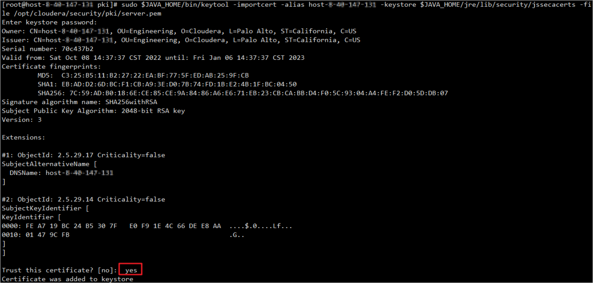

If the big data platform is Cloudera CDH, you can import the Cloudera CDH certificate to the product for secure communication between the product and Cloudera CDH. This section describes how to generate and obtain a certificate on Cloudera CDH. Skip this section in other scenarios. The following uses Cloudera CDH 6.3 as an example. The operations vary depending on the version. For details, see the corresponding version of product documentation of the big data platform.
Procedure
- Use PuTTY to log in to any node in the big data cluster.
- Check whether TLS/SSL has been configured on the Cloudera CDH platform. Run the following commands to create a certificate storage path.
- If TLS/SSL has not been configured, run the following command to create a certificate storage path and perform 3 to 12:
mkdir -p /opt/cloudera/security/pki
- If TLS/SSL has been configured:
- If you do not need to regenerate or configure a certificate, obtain related files and passwords from the environment administrator.
- If you need to regenerate and configure a certificate, perform the following steps to back up related files and perform 3 to 12.
- Obtain the hive.server2.keystore.path configuration path and back up all files in the path. The following uses the configuration of 2 as an example:
mkdir -p /opt/cloudera/security/pki_bak; cp -r /opt/cloudera/security/pki/* /opt/cloudera/security/pki_bak
- Obtain the HiveServer2 TLS/SSL Client Trust Store File configuration path and back up all files in the path. The following uses the configuration of 2 as an example:
mkdir -p $JAVA_HOME/jre/lib/security_bak; cp -r $JAVA_HOME/jre/lib/security/* $JAVA_HOME/jre/lib/security_bak
- Obtain the hive.server2.keystore.path configuration path and back up all files in the path. The following uses the configuration of 2 as an example:
- If TLS/SSL has not been configured, run the following command to create a certificate storage path and perform 3 to 12:
- Run the following command to go to the corresponding directory:
cd /opt/cloudera/security/pki
- Run the following command to generate the JKS certificate:
During the command execution, set the keystore password. The generated JKS certificate is stored in the /opt/cloudera/security/pki directory on the current node.
$JAVA_HOME/bin/keytool -genkeypair -alias $(hostname -f) -keyalg RSA -keystore /opt/cloudera/security/pki/$(hostname -f).jks -keysize 2048 -dname "CN=$(hostname -f),OU=Engineering,O=Cloudera,L=Palo Alto,ST=California,C=US" -ext san=dns:$(hostname -f)

- Run the following command to generate the CSR certificate:
$JAVA_HOME/bin/keytool -certreq -alias $(hostname -f) -keystore /opt/cloudera/security/pki/$(hostname -f).jks -file /opt/cloudera/security/pki/$(hostname -f).csr -ext san=dns:$(hostname -f) -ext EKU=serverAuth,clientAuth
- Run the following commands in sequence to generate the PEM certificate:
keytool -export -alias $(hostname -f) -keystore $(hostname -f).jks -file server.cer
openssl x509 -inform DER -outform PEM -text -in server.cer -out server.pem
- Run the following command to verify the certificate.
openssl x509 -in /opt/cloudera/security/pki/server.pem -noout -text
- Run the following commands to add the keystore password to the Java security library:
sudo cp $JAVA_HOME/jre/lib/security/cacerts $JAVA_HOME/jre/lib/security/jssecacerts
$JAVA_HOME/bin/keytool -storepasswd -keystore $JAVA_HOME/jre/lib/security/cacerts
$JAVA_HOME/bin/keytool -storepasswd -keystore $JAVA_HOME/jre/lib/security/jssecacerts
The initial password is changeit. Change the password to the password set in 4 as prompted.
- Run the following commands to add the certificate to the Java security library:
sudo $JAVA_HOME/bin/keytool -importcert -alias $(hostname -f) -keystore
$JAVA_HOME/jre/lib/security/jssecacerts -file /opt/cloudera/security/pki/server.pem

- Run the following commands in sequence to create a soft link from the cluster node to the certificate:
sudo ln -s /opt/cloudera/security/pki/$(hostname -f).pem /opt/cloudera/security/pki/agent.pem
sudo ln -s /opt/cloudera/security/pki/$(hostname -f).jks /opt/cloudera/security/pki/server.jks
- Log in to other Hive cluster nodes one by one and repeat the executions from 1 to 10.
- Use a browser to log in to Cloudera Manager and modify the Hive cluster configuration.
- Choose Cluster > Hive > Configuration.
- Click Hive (Service-Wide) and Security in sequence, and set the following parameters: Figure 1 shows a configuration example.
- Select Hive (Service-Wide).
- Set hive.server2.keystore.path to /opt/cloudera/security/pki/server.jks.
- Set hive.server2.keystore.password to the password set in 4.
- Set the HiveServer2 TLS/SSL Client Trust Store File to /usr/java/jdk1.8.0_171/jre/lib/security/jssecacerts, where jdk1.8.0_171 is the Java version. Replace it with the actual Java version number.
- On the Cloudera Manager home page, click Cloudera Manager Service.
- Choose Configuration > Security and set the following parameters: Figure 1 shows a configuration example.
- Set ssl.client.truststore.location to /usr/java/jdk1.8.0_171/jre/lib/security/jssecacerts. jdk1.8.0_171 is the Java version number, which should be changed based on the site requirements.
- Set ssl.client.truststore.password to the password set in 4.
- On the Instances page, synchronize the preceding configurations to each cluster node.
- Log in to the management node of the Hive cluster by using PuTTY and run the following command to restart the management service:
sudo systemctl restart cloudera-scm-server
- Use a browser to log in to Cloudera Manager and restart the cluster and management service.
- Choose Clusters > Hive and restart the Hive cluster in the Actions column.
- On the home page, choose Cloudera Management Service and restart the management service in the Actions column.
- If the Hive cluster contains multiple nodes, you need to combine the JKS files generated on all nodes into one JKS file. Otherwise, skip this step.
- Copy the JKS files in the /opt/cloudera/security/pki directory on all nodes to the directory on the same node.
- Go to the /opt/cloudera/security/pki directory and run the following command to combine the JKS files generated on all nodes into one certificate:
The following command is used to merge certificate 2 to certificate 1. If there are multiple nodes, run the following command to merge all certificates to the same certificate:
keytool -importkeystore -srckeystore certificate 1.jks -destkeysore certificate 2.jks